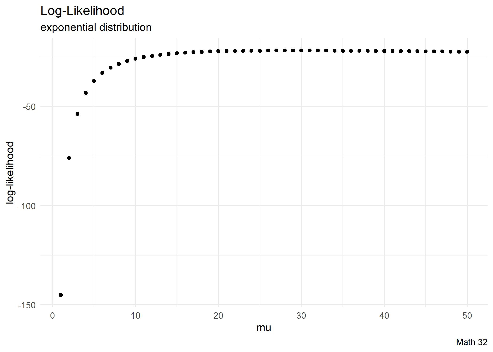
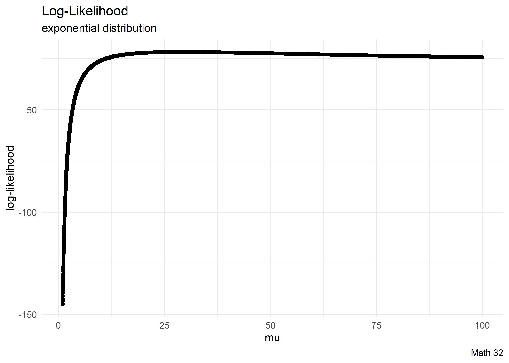

Today: Maximum Likelihood
Goal: Modify distribution parameters based on observed data
Objectives:
- derive maximum likelihood estimate for the exponential distribution
- derive maximum likelihood estimate for the Poisson distribution
Notation
Recall,
Lower-case \(\{x_{1}, x_{2}, x_{3}, ..., x_{n}\}\) is a set of observations
Upper-case \(\{X_{1}, X_{2}, X_{3}, ..., X_{n}\}\) is a set of random variables (i.e. a data set)
Treating \(\{X_{1}, X_{2}, ..., X_{n}\}\) as a set of \(n\) i.i.d. (independent and identically distributed) random variables is a common assumption.
With independence,
\[P(X_{1}, X_{2}, ..., X_{n}) = P(X_{1}) \cdot P(X_{2}) \cdot ... \cdot P(X_{n})\]
Each individual probability is computed (at least theoretically) with a PDF (probability density function)
\[P(x_{i}) = f_{X}(x_{i})\]
Inverse
Suppose that we have a sample of data \(\{x_{1}, x_{2}, x_{3}, ..., x_{n}\}\). Now we want to model with a probability distribution, but we need to figure out the distribution’s parameters. Let us think about this in a Bayesian way:
\[{\color{purple}{P(\text{model} | \text{data})}} = \displaystyle\frac{ {\color{blue}{P(\text{data} | \text{model})} \cdot P(\text{model})} }{ {\color{red}{P(\text{data})}} }\]
- \({\color{purple}{P(\text{model} | \text{data})}}\) is the posterior probability that we want
- \({\color{blue}{P(\text{data} | \text{model})}}\) is a likelihood
- Since the prior probability \({\color{red}{P(\text{data})}}\) is a constant …
… we say that the posterior probability is proportional to the likelihood.
Likelihood
Let the likelihood function, in terms of a parameter \(\theta\), be the joint probability
\[L(\theta) = P(X_{1} = x_{1}, X_{2} = x_{2}, ..., X_{n} = x_{n}) = f_{X}(x_{1}) \cdot f_{X}(x_{2}) \cdots f_{X}(x_{n})\]
or
\[L\left(\theta; \left\{x_{i}\right\}_{i=1}^{n}\right) = \displaystyle\prod_{i = 1}^{n} f_{X}(x_{i})\]
Suppose that we have data for how long a certain type and brand of light bulb operated (in the same working conditions), and that data in months was
\[6, \quad 18, \quad 29, \quad 44, \quad 48\]
Goal: characterize the top 5 percent of light bulbs.
- Build the likelihood function assuming an exponential distribution.
- Compute the likelihood that \(\mu = 25\).
- Compute the likelihood that \(\mu = 50\).
Log Likelihood
You know that logarithms make large numbers smaller. More precisely,
\[\ln(x) < x, \quad x > 1\]
Example: \(\ln(1234) \approx 7.1180\)
Did you know that logarithms make small numbers larger (in size). More precisely,
\[|\ln(x)| > x, \quad 0 < x < 1\]
Example: \(|\ln(0.1234)| \approx 2.0923\)
From pre-calculus, recall the properties of logarithms:
\[\ln(AB) = \ln(A) + \ln(B), \quad \ln\left(\displaystyle\frac{A}{B}\right) = \ln A - \ln B, \quad \ln(A^{c}) = c\ln A\]
For modeling with the exponential distribution, we saw that the likelihood function was
\[L\left(\lambda; \{x_{i}\}_{i=1}^{n}\right) = \displaystyle\prod_{i=1}^{n} f_{X}(x_{i}) = \lambda^{n}e^{-\lambda\sum x_{i}}\]
We take the natural logarithm to compute the log-likelihood function
\[\ell\left(\lambda; \{x_{i}\}_{i=1}^{n}\right) = \ln L\left(\lambda; \{x_{i}\}_{i=1}^{n}\right) = n\ln\lambda - \lambda\displaystyle\sum_{i=1}^{n} x_{i}\]
- Compute the log-likelihood that \(\mu = 25\).
- Compute the log-likelihood that \(\mu = 50\).
Maximum Likelihood
Given a data set \(\{x_{1}, x_{2}, ..., x_{n}\}\), we seek the desired parameter(s) that makes realizing the data set most likely.
\[L\left(\theta; \left\{x_{i}\right\}_{i=1}^{n}\right) = \displaystyle\prod_{i = 1}^{n} f_{X}(x_{i})\]
From calculus, recall that the main step in maximizing the value of a function is setting the first derivative equal to zero.
 
Given a data set \(\{x_{1}, x_{2}, ..., x_{n}\}\), assume an \(\text{Exp}(\lambda)\) distribution.
- Compute the value of rate parameter \(\lambda\) that maximizes the likelihood of the data set.
- Compute the likelihood at the maximum likelihood estimate (MLE).
- Characterize the top 5 percent of light bulbs.
Given a data set \(\{x_{1}, x_{2}, ..., x_{n}\}\), assume an \(\text{Pois}(\lambda)\) distribution. Compute the value of parameter \(\lambda\) that maximizes the likelihood of the data set.
Estimators Revisited
If we sample from a theoretical \(U(0, M)\) distribution, the sample maximum \(s_{M}\) of each sample is less than or equal to \(M\)
\[s_{M} \leq M\]
It would follow that the average of the sample maxima underestimates the true maximum
\[\text{E}[s_{M}] \leq M\]
Therefore the sample maximum is a biased estimator of the true maximum.
\[~\]
Similarly, the sample minimum \(s_{m}\) from a \(U(m, 0)\) distribution overestimates
\[\text{E}[s_{m}] \geq m\]
Therefore the sample minumum is a biased estimator of the true minumum.
Looking Ahead
Upcoming
- WHW10
- (next LHW assignments will be given after Thanksgiving)
Final Exam will be on Dec. 8